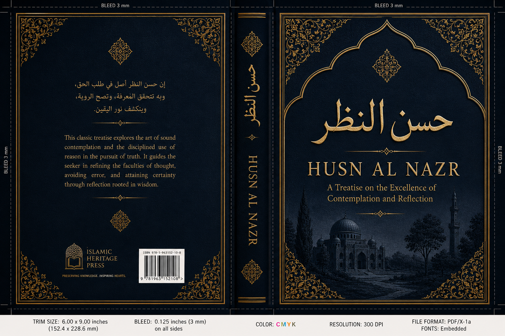

Ḥusn al-Naẓr: A Treatise on the Excellence of Contemplation and Reflection
Husn Al Nadr
The crown of modesty
Abu Muhammad
CONTENTS
HUSN AL NADR
PREFACE3
OPENING SERMON4
NOOR6
PAIN OF THE HEART6
Less Talk, More Action8
Lower Your Gaze10
THE WEAPON OF SATAN15
HEART-TOUCHING STORIES21
The Monk21
Prophet Yusuf and the Women of Egypt26
Tha‘labah, the Companion of the Prophet ﷺ28
The Monk Who Repented33
The Promised Land35
THE CURE40
Repentance40
The Women of Jannah45
Calling People Towards Modesty52
Preface
The Son of Adam عليه السلام is in a constant state of war. A war with the two most vicious enemies , the Nafs and Al-Shaytaan. Which constantly seek to drag him to the pit of darkness and pain. The reason for these two being the MOST dangerous enemies is because of the fact that they cannot be seen. To defeat these enemies one must prepare itself from every aspect. Among the elements of warfare is to learn the weaknesses and strengths of the enemy. The more you know your enemy the more easily you can overpower it. This book is supposed to be the ailment to a deadly disease. A powerful shot to cure the hearts of those who seek the cure. Those who are not afraid to fall and rise up again. Those whose tears are not in vain,
May Allah (s.w.t) accept this book
خطبة الكتاب
﷽
In the Name of Allah, The Most Beneficent, The Most Merciful
الحمد لله مفيض الانوار وفاتح الابصار وكاشف الاسرار و رافع الاستار و الصلاة و السلام علي محمد نور الانوار و سيد الابرار و بشير الغفار و نذير القهار و فاضح الفجار و قاممع الكافر و علي آله و صحبه الطاهرين الخيار
اما بعد
قال اللهﷻ قُل لِّلْمُؤْمِنِينَ يَغُضُّوا مِنْ أَبْصَارِهِمْ وَيَحْفَظُوا فُرُوجَهُمْ ۚ ذَٰلِكَ أَزْكَىٰ لَهُمْ ۗ إِنَّ اللَّهَ خَبِيرٌ بِمَا يَصْنَعُونَ
Tell the believing men to reduce [some] of their vision and guard their private parts. That is purer for them. Indeed, Allah is Acquainted with what they do.
قال اللهﷻ يَا أَيُّهَا الَّذِينَ آمَنُوا لَا تَتَّبِعُوا خُطُوَاتِ الشَّيْطَانِ ۚ وَمَن يَتَّبِعْ خُطُوَاتِ الشَّيْطَانِ فَإِنَّهُ يَأْمُرُ بِالْفَحْشَاءِ وَالْمُنكَرِ ۚ وَلَوْلَا فَضْلُ اللَّهِ عَلَيْكُمْ وَرَحْمَتُهُ مَا زَكَىٰ مِنكُم مِّنْ أَحَدٍ أَبَدًا وَلَٰكِنَّ اللَّهَ يُزَكِّي مَن يَشَاءُ ۗ وَاللَّهُ سَمِيعٌ عَلِيمٌ
O you who have believed, do not follow the footsteps of Satan. And whoever follows the footsteps of Satan - indeed, he enjoins immorality and wrongdoing. And if not for the favor of Allah upon you and His mercy, not one of you would have been pure, ever, but Allah purifies whom He wills, and Allah is Hearing and Knowing.
قَالَ رَسُولُ اللَّهِ صلى الله عليه وسلم إِنَّ اللَّهَ أَنْزَلَ الدَّاءَ وَالدَّوَاءَ وَجَعَلَ لِكُلِّ دَاءٍ دَوَاءً فَتَدَاوَوْا وَلاَ تَدَاوَوْا بِحَرَام
The Prophet (ﷺ) said: Allah has sent down both the disease and the cure, and He has appointed a cure for every disease, so treat yourselves medically, but use nothing unlawful.
The purity of glance is amongst the greatest weapon that a human being has to overpower the two enemies. Among the epidemics of our age and time is the spread of shamelessness and audacity which was never witnessed before. Shamelessness to such an extent which would make the mountains shiver , the heavens to cry , the earth to split open, the stars to collide and the seas to swell up. From Homosexuality to Pornography , Public Nudity , Same-gender marriages, and only Allah knows best what evil the society is breeding on in this age. These are serious times, and all of this fire is sparked by just one single spark, the spark of the glance.
Noor
The verses mentioned in the Khutbah are verses from Surah Al Noor. Noor in Arabic means more than just light. Imam al Ghazali says regarding Nur in his great book Mishkat Al Anwaar
اَلظَّاهرُ بنفسهِ والمظهِرُ لغيرهِ
It is apparent by nature and has the ability to reveal the reality of other objects.
Allah has revealed the surah which lightens up the heavens and earth, which lightens up the entire life of a believer. It contains the rulings for the correct use of the eye which illuminates the heart which becomes capable to see in this world and the hereafter. An illumination to such an extent that even the sun and the moon cannot contest the brightness of that noor.
Pain of the heart
Noor brings with itself shadows, it is as if the protection of your gaze is pure noor and the pain which the heart takes to stop itself is the shadow which is casted by that noor. Therefore protecting your gaze and the pain the heart goes through cannot be separated just like light cannot be separated from shade. Except when the sun reaches its peak during midday when all shadows disappear this is parable to the state of the heart when it receives the halaawah and the supreme ecstacy of ibaadah ( worship ) because of the luminosity of the noor which came from lowering the gaze which overcame the shadows of pain and turned into pleasure as the Prophet s.a.w said
من نظر إلى امرأة فغض بصره عند أول دفعة رزقه الله عبادة يجد حلاوتها
Whoever looks at a woman and lowers his gaze the first time Allah bestows on him with such a worship that he feels the halaawa ( sweet pleasure ) in his heart.
مَا مِنْ مُسْلِمٍ يَنْظُرُ إِلَى مَحَاسِنِ امْرَأَةٍ أَوَّلَ مَرَّةٍ ثُمَّ يَغُضُّ بَصَرَهُ إِلَّا أَحْدَثَ اللَّهُ لَهُ عِبَادَةً يَجِدُ حَلَاوَتَهَا
None among the Muslims is such that he looks at the beauty of a woman for the first time and lowers his gaze except that Allah grants him with such a worship that he feels its halaawa ( sweet pleasure ) in his heart.
Sheikh ul Islam Ibn tamiyyah (R.A) says
غض البصر فيه ثلاث فوائد. حلاوة لإيمان، نور القلب وفراسته، قوة القلب وثباته وشجاعتة Lowering the gaze has three benefits. The sweet pleasure of Iman, Noor of the heart and clarity of insight , strength of the heart and its endurability and its braveness.
Ibn Tamiyyahs disciple Ibn Qayyim says
إن غض البصر يورث الفراسة الصادقة التي يميز بها بين المحق والمبطل
Lowering the gaze grants one with the attribute of pure insight by which one can differentiate between truthfulness and falsehood
Less talk more action
Noor is pure energy as we all know that E= . Since Noor is energy and the Imaan inside the chest of a mumin is Noor, it would mean that to increase the brightness inside that niche ( your chest ) you need to create some movement. That movement is your righteous deed which would increase the brightness and clarity of the light inside your chest. So lowering your gaze is an act of righteousness and it is a movement of the eye which means that energy is created. Tangible energy (the movement of the eye) is converted from one form to another while a new form of energy is created which is intangible and that is the noor of Iman which you can only feel in your intangible heart.
كم من فؤاد كفيف البصر وكم من كفييف بصير الفؤاد
So many hearts are blind and cannot see and
So many blinds have hearts which can see
Zamakhshari rahimahullah mentions in his tafsir Al Khashaaf that it was revealed to Musa A.S that such shameless is a person who longs for my paradise and does not practice. How do I be bountiful with my mercy with the one who is a miser in doing good deeds.
Sahr bin hawshab rahimahullah says Desiring jannah without practice is a sin amongst the sins and waiting for the intercession without practice is a deception and hoping for mercy of Allah for the one who does not obey Him is foolishness and ignorance.
Rabia basri rahimhallah says
تَرْجُو النَّجاةَ وَلَمْ تَسْلُكْ مَسَالِكَهَا إنَّ السّفِينَةَ لا تَجْرِي عَلَي الْيَبَسِ
You seek the path of salvation and yet you don’t walk its path
Indeed, A ship does not float over dryness
Lower Your Gaze
Now lets look into the word يَغُضُّ mentioned in the verse. It has its roots in the letters غ ض ض and regarding that Ibn Farsi says in his dictionary Miqyaas Al Lughah
الغين و الضاد أصلان صحيحان يدلُّ أحدهما: علي كفِّ و نَقصٍ و الآخر علي طراوة
This means that these 3 letters have two meanings; the first is to stop and reduce while the second means freshness/softness/tenderness
Imam Raghib Isfahani writes in his famous dictionary of the Quran called Mufradaat ul Quran
اَلْغَضُّ Means to reduce something whether it is a glance or to reduce something from a vessel as Allah says
قُل لِّلْمُؤْمِنِينَ يَغُضُّوا مِنْ أَبْصَارِهِمْ “ Say to the believing men to lower their gaze”
وَقُل لِّلْمُؤْمِنَاتِ يَغْضُضْنَ مِنْ أَبْصَارِهِنّ` “ Say to the believing women to lower their gaze”
وَاغْضُضْ مِنْ صَوْتِك “Lower your voice”
And in the following verse of a poet the word is used as a mockery
فَغُضَّ الطَّرْفَ اِنّكَ مِنْ نُمَير “So lower your gaze, Indeed you are from Bani
Numair”
غَضَضْتُ السِّقَا “ I reduced the water from the vessel ”
غَضٌّ is such a moist and fresh thing on which a very brief period of time has passed.
In the footnote of the tafsir “Aysar ul tafaasir’’ written by Sheikh Abu Bakr Al Jazayri it is said that Allah has commanded to lower your gaze before he commanded the protection of your private parts because the gaze is a guide for the heart just like fever is a guide for death. As a poet says
ألم تر أن العين للقلب رائد فما تألف العينان فالقلب آلف
Do you not see that the eye is a guide to the heart
Whatever the eyes desire to see, the heart longs for it
This is what is confirmed from a narration:
عنْ أَبِي هُرَيْرَةَ، عَنِ النَّبِيِّ صلى الله عليه وسلم قَالَ " كُتِبَ عَلَى ابْنِ آدَمَ نَصِيبُهُ مِنَ الزِّنَى مُدْرِكٌ ذَلِكَ لاَ مَحَالَةَ فَالْعَيْنَانِ زِنَاهُمَا النَّظَرُ وَالأُذُنَانِ زِنَاهُمَا الاِسْتِمَاعُ وَاللِّسَانُ زِنَاهُ الْكَلاَمُ وَالْيَدُ زِنَاهَا الْبَطْشُ وَالرِّجْلُ زِنَاهَا الْخُطَا وَالْقَلْبُ يَهْوَى وَيَتَمَنَّى وَيُصَدِّقُ ذَلِكَ الْفَرْجُ وَيُكَذِّبُهُ "
Abu Huraira reported Allah's Messenger (ﷺ) as saying. Allah fixed the very portion of adultery which a man will indulge in. There would be no escape from it. The adultery of the eye is the lustful look and the adultery of the ears is listening to voluptuous (song or talk) and the adultery of the tongue is vulgar speech and the adultery of the hand is the lustful grip (embrace) and the adultery of the feet is to walk (to the place) where he intends to commit adultery and the heart longs and desires which he may or may not put into effect.
Imam Ghazali in Ihya writes
The sin of the fornication of eye is greatest among the minor sins. He who cannot control his eyes cannot save his organ. Jesus Christ said: Take care of your eye as it sows the seed of sexual passion and heat and that is sufficient for creation of danger. Prophet Yahya A.S was asked: What is the source of fornication? He said: The corrupt glance and greed. The Prophetﷺ said: Eye sight is a poisonous arrow out of the arrows of the devil. God gives to a man who gives it up for fear of God such faith which gives satisfaction to his heart. He also said: There will remain no greater danger for the people after my death than women. He also said: Fear the world and women. The cause of first danger which came upon the children off Israil was women. God says: Tell the believers to control their glance. The Prophet said: Everyone has got a share in fornication. His two eyes commit fornication by sight. His two hands commit fornication by touch. His two feet commit fornication by walk. His mouth commits fornication by Kiss. His heart commits fornication by thought. His sexual organ commits fornication by translating it into action.
The weapon of Satan, the enemy
Allah Says:
الشَّيْطَانُ يَعِدُكُمُ الْفَقْرَ وَيَأْمُرُكُم بِالْفَحْشَاءِ ۖ وَاللَّهُ يَعِدُكُم مَّغْفِرَةً مِّنْهُ وَفَضْلًا ۗ وَاللَّهُ وَاسِعٌ عَلِيمٌ -
Satan threatens you with poverty and orders you to immorality, while Allah promises you forgiveness from Him and bounty. And Allah is all-Encompassing and Knowing.
In a hadith with weak chain
النظرة سهمٌ مسموم من سهام إبليس
The nazr ( glance ) is a poisonous arrow from the arrows of Iblees
A poisonous arrow does not kill immediately. In fact, it kills one slowly. Step by step. The pain increases gradually until ones breath ceases. This is what a bad glance does to you. It hits you in the heart. Then you feel like talking then when you talk you feel like exchanging numbers then you want to go out on a date then you want to be alone with each other then you want to hold her hand and then you feel like embracing her until you end up with something which is equitable to death.
You might question, an arrow is painful but all this romance feels so good. Then I’d say that the pain of the punishment of just one glance in the hellfire will make you forget all the romance of your entire life. In fact you might even be punished in this life for your deed. As it is narrated by Abdullah ibn Masud that a man came to the Prophetﷺ and he was bleeding so the Prophet ﷺ asked him regarding his situation and he replied that I was looking at a woman until he hit the wall which caused him to bleed. So the Prophet ﷺ told him that whenever Allah wants good for His slave, he hastens with the punishment for him in this world.
Ibn Jawzi rahimahullah mentions in his book Zammul Hawa that There was a man named Salih, in Baghdad. He used to call people for prayer as he was a muezzin for 40 years and he was famous for his piety. One day he climbed up the minar to give the azaan until his glance fell upon a woman in a house which belonged to the Christians. So he fell for that woman because of her beauty. He finished his Azaan and went straight to her house and knocked the door. She asked “ Who is it ?” He said “Its Salih the muezzin” she recognized him and opened the door for him. He tried to reach out for her but she resisted and asked him that “ You Muslims are faithful then why are you making this unfaithfulness? ” So he told her how he felt about her so she said “ This can never happen except that you leave your religion, only then there might be some possibility. ” He renounced his faith because of the heat of his lust and said “ I have nothing to do with Islam and whatever Muhammad ﷺ was sent with” She said “ You’re saying all this because of your lust and once you fulfill your purpose you might turn your back on me therefore I have certain conditions! The first one is that you eat pork” So out of his love for her he ate from the pork then she said “ Drink from this wine ” and he drank from it. When the alcohol started its work he tried to reach out for her. She took him in a room and told him to climb the stairs to the roof until his father returns and marries him to her. He was drunk , and was climbing the stairs until he stumbled and fell from the stairs until he died.
She wrapped him in a cloth until her father returned. When her father returned she narrated the whole story to her and both of them threw away his body on the street during the night time. Soon his story got famous and people threw his body to rot in the dump.
In this matter, reading the book Talbees e Iblees ( The deception of Satan ) By Ibn Jawzi rahimahullah will prove to be very effective. The book is very profound and precise. I will mention some narrations from the book which are relevant to us.
Mujahid said: 'Iblis has five sons' He appointed each of them on one of his affairs. Their names are: Thabr, AJ-Nwar Musawwat, Dasim and Zulunbur. As for Thabr, he is responsible for calamities. He orders people to rip their clothes, slap their cheeks and make the call of ignorance when stricken by calamity. Al-A'war is responsible for fornication. He beautifies it and orders others to commit it. As for Musawwat, he is responsible for lies. He hears the news and transfers it to someone else, who in turn, goes to a gathering of people and tells them: I met a person whose face I know but I do not know his name. He told me such and such. Dasim shows a wife's faults to her husband and makes him angry with them. And Zulunbur is responsible for the market place. He sticks his flag therein
Sa'Id lbn Al-Musayyab said: 'Iblis never gave up to seduce every Prophet that Allah has sent; by using women
Hasan Ibn Salih said: 'I heard that the devil said addressing The Woman: 'You are half of my army, you are my arrow with which I never miss, you are the one I entrust with my secrets, and you are my messengers.
Abdu'l-Rahman Ibn Ziyad Ibn An'um said: 'While [Prophet] Musa ('alayhis-salam) was in a gathering Iblis came wearing a hooded cape that changed in colors. When the devil cam
e nearer he took off the cape and set it down and came to Musa saying: 'Peace be upon you. Musa replied: 'Who are you?' He said: 'I am Iblis. ' Musa responded: 'No greetings from Allah to you, what brought you here?' The devil said: 'I came to greet you because of your high godly status.' Musa said: 'What have I seen you wearing?' Iblis replied: 'I use it (the cape) to capture the hearts of the sons of Adam.' Musa asked: 'What is it that if a human does will enable you to take him over?' He replied: 'If he becomes fond of himself, and considered his (good) deeds plentiful.' I warn you from three things: First, never be alone with a woman that is not lawful to you. Because whenever someone does so, I personally accompany him and use her to seduce him. Second, never promise Allah something except that you fulfill your promise. Whenever someone promises Allah something I personally accompany him to prevent him from fulfilling his promise. And never take an amount of money to give charity except that you make sure you give it to that charity. Whenever someone takes an amount of money to give to charity, I personally accompany him to persuade him not to give it. Then Iblis walked away saying: 'Woe to me, thrice, I have taught [Prophet] Musa from what to warn the sons of Adam.
A FEW HEART TOUCHING STORIES
THE MONK
At the time of Bani Israel, there was a man in a small village, called Barsisa. He was, what you call, a monk. But he was a true Christian.
One day three brothers decided to go for Jihad. But they had a sister and they did not want to leave her alone. So they went looking for someone to take care of her. The town people suggested to leave her with Barsisa, because of his piety. So they went to him and when they asked him, he said, "I seek refuge from the cursed Shaytan" and said No! This was because he was scared of falling into sin (due to the potential fitnah it may cause). Then Shaytan came to Barsisa in the form of Waswasah (Whisperings). Shaytan is very smart and knew Barsisa had a soft heart. So he told Barsisa, "What if they can’t find someone good and leave her with someone bad, wouldn’t that be your fault? Now Barsisa did not realise this was Shaytan whispering in his heart, and because of his compassion for others, he decided to accept their request and help the woman.
He let her stay in a house opposite the church. He did this so that it would be easy for him to leave her food outside the church and she could come get it herself. But after sometime, shaytan returned. This time he told Barsisa, "Why don’t you leave the food closer for her, so that people don’t see her moving back and forth alone!" Barsisa agreed and started leaving the food outside the house. But shaytan wasn’t happy with this either, so some time later, he returned and ask Barsisa, "Why don’t you go in and leave it on the table, so that no one sees her coming out and going in alone all the time!" Again, Barsisa agreed and he started leaving the food on the table.
Then as time went by, Shaytan returned and said to him, "Why don’t you talk to her, she is all alone and has no one to talk to!" Barsisa agreed and started talking to her from behind a door (so as to screen himself). But this would lead them to almost shouting to each other to here themselves. Shaytan asked Barsisa to just go in and talk to her, and finally, he (Shaytan) had got the alone in a room. Shaytan had completed the difficult part. It wasn’t after Barsisa and the woman committed fornication. And to make things worse, she also became pregnant. As soon as the baby was born, Shaytan returned, and said to Barsisa, "What have you done? Look at the result of your evil (i.e. the child), get rid of the evidence otherwise the brothers will kill you!" Barsisa killed the baby and buried it in the same room the woman was in. Shaytan then told Barsisa, "Do you think you can kill the child of a woman and expect her not to tell anyone?!" and So Barsisa killed her and buried her alongside the baby! He then made a fake grace outside and when her brothers returned, he informed them that she died of illness. After seeing the grave and make dua for her, they returned home and accepted Allah’s decree.
Later that night, Shaytan came to them in their dream and informed them about what Barsisa had done and where the child and their sister could be found. The brother got up upset and confused, and informed his brothers of the dream, and they both said they had the same dream. So they believed that it must be true, and when and dug up the fake grave and found it empty. They then dug the place shaytan showed them in the dream and found the child and woman!
Furious, the brothers took Barsisa to the Leader to get his punishment. Barsisa knew that he would be given the death penalty. Shaytan came to Barsisa again, for the final time this time. This time he revealed himself and told him he was the one whispering the thoughts to him. And he said that he could save Barsisa, and as long as Barsisa makes sujood to him! Barsisa, out of desperation made Sujood to him , this confirmed his Kufr (disbelief) and Shaytan said to him "I am free of you, I fear Allah, the Lord of the ‘Alamin (mankind, jinns and all that exists)!" and left Barsisa who was stoned to death and on the day of judgement he will be resurrected making Sujood to Shaytan!
Probably this is the same son of satan which is present in our colleges universities and workplaces. Hunting for the pious people of Allah. Misleading them in the name of “Akhlaaq” (good manners). So one is busy working in his workplace and a time comes when he needs to interact with his female co-worker. Now the right way to deal with a female is to be highly formal so that you block all the gates for satan to enter but here comes this son of satan and tells you ‘Look at you! You’re so ill mannered, you should talk to her softly, what will she think about Islam, How will you impress her with Islam with these bad manners of yours.” Until this poor man ends up being Barsisa reincarnated. This satan never told me to talk nicely with my male co-workers and he never told me to be forgiving to my subordinates or employees. His whole sermon of good manners is when it comes to women. May Allah protect us from this deception. It is mentioned in Surah Yusuf that the deception of women is Azeem.
Prophet Yusuf and the women of Egypt
Which story can be more beautiful than the story of Prophet Yusuf? It is called Ahsan al Qasas which means it is the most beautiful story and it is also the best style of narrating a story. It is a collection of the epitome Love, Hate, Envy, Lust, and Forgiveness. The most Handsome man being lured to the den of women to be feasted on. Yet he turns them down and says “ Oh my Lord! Prison is more beloved to me than what these women are inviting me”. The Governor’s wife invites him to sin and locks the doors and yet he runs away from her. She had fallen for the beauty of Yusuf (A.S). She then threatens him with prison so she may get what she wants but Yusuf (A.S) makes her moves to fail with the help of Allah. Until she got him thrown into prison. Have you ever wondered ? what made her do all this ? She cheated on her husband , tried to force another human being to please her, took the burden of being a subject of gossip in the city and then threw the person she was passionate for ,into the darkness of the dungeon and then eventually she had to publicly humiliate herself when she had to announce that she had harassed him and not that Yusuf (A.S) had harassed her ? If you would pause and think for a while you will reach to the source of the whole agony and distress. And that is the misuse of the eyes. If only she had protected her gaze she wouldn’t have to suffer so much. If she would’ve protected her gaze not only herself but also her husband and Yusuf(a.s) all would’ve been in peace. If she would’ve protected her gaze, her heart wouldn’t have to suffer pain and unrest.
Thalabah, the companion of the Prophet ﷺ
A young man of the Ansaar who was called Tha‘labah ibn ‘Abd ar-Rahmaan became Muslim, and he used to serve the Prophet (blessings and peace of Allah be upon him). He sent him on an errand, and he passed by the door of a man among the Ansaar, where he saw an Ansaari woman doing ghusl. He looked repeatedly at her, after which he became afraid that Revelation would come down to the Messenger of Allah (blessings and peace of Allah be upon him), so he went out, fleeing, and came to a mountainous area between Makkah and Madinah, where he hid. The Messenger of Allah (blessings and peace of Allah be upon him) missed him for forty days, and these were the days when they said his Lord had forsaken him and was displeased with him, then Jibreel (peace be upon him) came down to the Messenger of Allah (blessings and peace of Allah be upon him) and said: O Muhammad, your Lord conveys greetings of peace (salaam) to you, and says: The man from your ummah who has fled is in these mountains, seeking refuge with Me from My Fire. The Messenger of Allah (blessings and peace of Allah be upon him) said: “O ‘Umar! O Salmaan! Go and bring Tha‘labah ibn ‘Abd ar-Rahmaan to me.” They set out through the streets of Madinah and were met by one of the shepherds of Madinah whose name was Dhufaafah. ‘Umar said to him: O Dhufaafah, do you know anything about a young man in these mountains? Dhufaafah said to him: Perhaps you are looking for the one who is fleeing from Hell? ‘Umar said to him: How do you know that he is fleeing from Hell? He said: Because in the middle of the night he came out to us from these mountains with his hand on his head, saying: Would that You took my soul as You took other souls and my body as You took other bodies, and not expose me on the Day of Judgement! ‘Umar said: He is the one we are looking for. So Dhufaafah set out with them, and in the middle of the night he came out to them from those mountains, with his hand on his head, saying: Would that You took my soul as You took other souls and my body as You took other bodies, and not expose me on the Day of Judgement! ‘Umar went to him and embraced him and (Tha‘labah) said: I want to be safe from the Fire. ‘Umar said to him: I am ‘Umar ibn al-Khattab. He said: O ‘Umar, does the Messenger of Allah (blessings and peace of Allah be upon him) know of my sin? He said: All I know is that he remembered you yesterday, and the Messenger of Allah (blessings and peace of Allah be upon him) wept. Tha‘labah said: O ‘Umar, do not let me enter upon him except when he is praying, and Bilaal is saying Qad qaamat as-salaah (Prayer is about to begin – i.e., the iqaamah or call immediately preceding the prayer). ‘Umar said: I shall do that. Then they brought him to Madinah and arrived when the Messenger of Allah (blessings and peace of Allah be upon him) was praying Fajr. ‘Umar and Salmaan hastened to join the row (of worshippers), and no sooner did Tha‘labah hear the recitation of the Messenger of Allah (blessings and peace of Allah be upon him), but he fell unconscious. When the Messenger of Allah (blessings and peace of Allah be upon him) said the salaam (at the end of the prayer), he said: “O ‘Umar, O Salmaan, what happened to Tha‘labah ibn ‘Abd ar-Rahmaan?” They said: He is over there, O Messenger of Allah. The Messenger of Allah (blessings and peace of Allah be upon him) stood up and said: “O Tha‘labah!” He said: Here I am, O Messenger of Allah. He looked at him and said: “What kept you away from me?” He said: My sin, O Messenger of Allah. He said: “Shall I not tell you about a verse that will expiate sins and errors?” He said: Yes, O Messenger of Allah. He said: “Say: Allaahumma aatina fi’d-dunya hasanah wa fi’l-aakhirati hasanah wa qinna ‘adhaab an-naar (O Allah! Give us in this world that which is good and in the Hereafter that which is good, and save us from the torment of the Fire) (cf. al-Baqarah 2:201).” He said: My sin is too great, O Messenger of Allah. The Messenger of Allah (blessings and peace of Allah be upon him) said: “Rather the word of Allah is greater.” Then the Messenger of Allah (blessings and peace of Allah be upon him) instructed him to go home. He fell sick for eight days, then Salmaan came to the Messenger of Allah (blessings and peace of Allah be upon him) and said: O Messenger of Allah, do you want to visit Tha‘labah, because he is sick? The Messenger of Allah (blessings and peace of Allah be upon him) said: “Let us go to him.” When he entered upon him, the Messenger of Allah (blessings and peace of Allah be upon him) took hold of his head and placed it in his lap, but he pulled his head away from the lap of the Messenger of Allah. The Messenger of Allah (blessings and peace of Allah be upon him) said to him: “Why did you pull your head away from my lap?” He said: Because it is full of sins. He said: “What do you feel?” He said: I feel something like the crawling of ants between my skin and my bones. He said: “What do you long for?” He said: The forgiveness of my Lord. Then Jibreel (peace be upon him) came down to the Messenger of Allah (blessings and peace of Allah be upon him) and said: Verily your Lord conveys greetings of salaam to you and says: If this slave of Mine were to meet Me with an earthful of sins, I would meet him with a similar measure of forgiveness. The Messenger of Allah (blessings and peace of Allah be upon him) said: “Should I not tell him about that?” He said: Yes indeed. So the Messenger of Allah (blessings and peace of Allah be upon him) told him about that, and he gave a shout then died. The Messenger of Allah (blessings and peace of Allah be upon him) gave instructions that he should be washed and shrouded, and he offered the funeral prayer for him. Then the Messenger of Allah (blessings and peace of Allah be upon him) began walking on tiptoe and they said: O Messenger of Allah, why do we see you walking on tiptoe? He said: By the One Who sent me with the truth as a Prophet, I could not put my feet on the ground because of the many wings of the angels who came down to accompany his funeral procession.
The monk who repented
رواه ابن حبان في صحيحه ورواه البيهقي عن ابن مسعود موقوفا عليه ولفظه إن راهبا عبد الله في صومعته ستين سنة فجاءت امرأة فنزلت إلى جنبه فنزل إليها فواقعها ست ليال ثم سقط في يده فهرب فأتى مسجدا فأوى فيه ثلاثا لا يطعم شيئا فأتي برغيف فكسره فأعطى رجلا عن يمينه نصفه وأعطى آخر عن يساره نصفه فبعث الله إليه ملك الموت فقبض روحه فوضعت الستون في كفة ووضعت الستة في كفة فرجحت يعني الستة ثم وضع الرغيف فرجح يعني رجح الرغيف الستة
A monk worshiped Allah for 60 years in his monastery until he saw a woman and he fell for her. He went down to her and they both fell into the trap of Satan and remained with each other for 6 nights. After 6 nights he fell remorseful and regretful so he ran away from her and ran towards a masjid where he didn’t eat for 3 days. People noticed his presence and offered him a piece of loaf. He hadn’t eaten for 3 days, how hungry he might’ve been but he saw two other people hungry,one on his right and the other on his left so he divided the bread in two and gave one on his right and the other on his left. At this moment the angel of death arrived. They put 60 years of his worship on one side of the scale the 6 nights of sin on the other side so the 6 nights became heavier. Then the angels put the piece of bread on one side of the scale which made the scale heavier than his 6 nights of sin which were heavier than his 60 years of worship.
The Promised Land
A true eye opening story mentioned in the books of Tafasir regarding the verse of Surah A’raf as Allah says
وَاتْلُ عَلَيْهِمْ نَبَأَ الَّذِي آتَيْنَاهُ آيَاتِنَا فَانسَلَخَ مِنْهَا فَأَتْبَعَهُ الشَّيْطَانُ فَكَانَ مِنَ الْغَاوِينَ -
وَلَوْ شِئْنَا لَرَفَعْنَاهُ بِهَا وَلَٰكِنَّهُ أَخْلَدَ إِلَى الْأَرْضِ وَاتَّبَعَ هَوَاهُ ۚ فَمَثَلُهُ كَمَثَلِ الْكَلْبِ إِن تَحْمِلْ عَلَيْهِ يَلْهَثْ أَوْ تَتْرُكْهُ يَلْهَث ۚ ذَّٰلِكَ مَثَلُ الْقَوْمِ الَّذِينَ كَذَّبُوا بِآيَاتِنَا ۚ فَاقْصُصِ الْقَصَصَ لَعَلَّهُمْ يَتَفَكَّرُونَ –
And recite to them, [O Muhammad], the news of him to whom we gave [knowledge of] Our signs, but he detached himself from them; so Satan pursued him, and he became of the deviators.And if We had willed, we could have elevated him thereby, but he adhered [instead] to the earth and followed his own desire. So his example is like that of the dog: if you chase him, he pants, or if you leave him, he [still] pants. That is the example of the people who denied Our signs. So relate the stories that perhaps they will ponder.
Musa A.S drove the Children of Israel out of Egypt towards the promised land. When they reached near the new country they learned it was occupied by a strong nation so they said
قَالُوا يَا مُوسَىٰ إِنَّ فِيهَا قَوْمًا جَبَّارِينَ وَإِنَّا لَن نَّدْخُلَهَا حَتَّىٰ يَخْرُجُوا مِنْهَا فَإِن يَخْرُجُوا مِنْهَا فَإِنَّا دَاخِلُونَ
They said, "O Moses, indeed within it is a people of tyrannical strength, and indeed, we will never enter it until they leave it; but if they leave it, then we will enter."
As Moses and the Bani Israel wait outside , there is a man inside that nation who was called Balam bin Bawar. He was given knowledge of the books. And he was amongst those who when raised his hands for dua Allah did not return them empty because he had the knowledge of Ism ul Aaazam (Allah’s most sanctified name) through which he would seek Allahs help. He was so knowledgable that 12000 students used to gather around him to write down his teachings.
His people gathered around him and asked him to pray against Musa A.S and his nation so they may be defeated. He denied their request and said that it would destroy him and his hereafter but they heavily insisted him to fulfil their request and make Dua against Moses and his people. They offered him a lot of wealth and his wife suggested him to accept the bribe and do what their nation asked them to do. So he gathered with his people to make dua against Musa A.s and his people. When he started to make dua Allah s.w.t twisted his tongue and instead of making against Musa A.s he started making dua against his own nation. His people were taken off guard. They screamed and called out to him to stop this insanity but he replied that Allah has made it out of his control. As a punishmet his tongue was made to hang out until his chest. Grieved from the event, he came up with another sinister idea which only a knowledgeable man could know. He suggested that a band of beautiful young girls should be sent into the camps of Bani Israel so that they might make their men commit zina with them. He said that they are travelling since a long time and many of them will fall for the trick. He added “Allah hates zina”.
His nation accepted his trickery and dispatched a group of a young girls into the camps of Bani Israel. The men of Bani Israel could not resist and fell for this trick and one of their chieftains also ended up commiting Zina. When this happened Allah sent down a plague on Bani Israel which took the lives of 70,000 people. At last they punished the chieftain and the woman he was involved with, and hung him on the street as a lesson for everyone which relieved them from the plague.
This is confirmed from a hadith in which the Prophet ﷺ said that there is no nation which commits Faahisha ( Promisculity ) except that Allah sends down such plagues that even their ancestors were unaware of.
Imam Razi says regarding the verse that this verse is amongst the most heavy and powerful verses for the people of Knowledge because after teaching a man with His knowledge and teaching him the Ism e Aazam and granting the status of Mustajaab ul daawaat ( A status where every prayer is answered ) , the man became worse than a dog because he turned away from following the guidance and accepted to follow his desire . And this is a sign towards the saying of the Prophet ﷺ that whoever increases in knowledge and does not increase in guidance he does not increase in anything other than the distance from Allah.
Brothers and Sisters, This story has a lot to teach.
Our each and every body part is in Allah’s control. He has total authority and command and control over each and every limb that we possess. It is not hard for Him to take away the eyes we use to cheat on Him and It is not hard for Him to make those eyes useful for us by purifying them for us. So we should ask him to purify them for us. That is why the Prophet ﷺ taught us this dua
اللَّهُمَّ إِنِّي أَعُوذُ بِكَ مِنْ شَرِّ سَمْعِي، وَمِنْ شَرِّ بَصَرِي، وَمِنْ شَرِّ لِسَانِي، وَمِنْ شَرِّ قَلْبِي، وَمِنْ شَرِّ مَنِيِّي
O Allah! I seek refuge in You from the evil of hearing and the evil of vision and the evil of my tongue and the evil of my heart and the evil of my sperm.
He has taught us to seek refuge from the evil of all these parts of our body which play part in leading us to the act of zina.
Wives can often be misleading especially if they are not pious. That’s why a pious wife is amongst the best goods from the goods of the world. Ibn Kathir mentions in his book Qasas ul Ambiya that during the time of Adam’s A.S death his wife came to him but he told her to leave him alone because she had been the reason for them to be thrown out of Paradise.
The help of Allah is taken away because of the sins of the son of Adam.
THE CURE
Repentance
قَالَ رَسُولُ اللَّهِ صلى الله عليه وسلم إِنَّ اللَّهَ أَنْزَلَ الدَّاءَ وَالدَّوَاءَ وَجَعَلَ لِكُلِّ دَاءٍ دَوَاءً فَتَدَاوَوْا وَلاَ تَدَاوَوْا بِحَرَام
The Prophet (ﷺ) said: Allah has sent down both the disease and the cure, and He has appointed a cure for every disease, so treat yourselves medically, but use nothing unlawful.
Allah says
وَالَّذِينَ إِذَا فَعَلُوا فَاحِشَةً أَوْ ظَلَمُوا أَنفُسَهُمْ ذَكَرُوا اللَّهَ فَاسْتَغْفَرُوا لِذُنُوبِهِمْ وَمَن يَغْفِرُ الذُّنُوبَ إِلَّا اللَّهُ وَلَمْ يُصِرُّوا عَلَىٰ مَا فَعَلُوا وَهُمْ يَعْلَمُونَ
And those who, when they commit an immorality or wrong themselves [by transgression], remember Allah and seek forgiveness for their sins - and who can forgive sins except Allah ? - and [who] do not persist in what they have done while they know.
The verse is reported to have 3 different events of the nuzool as mentioned by Wahidi in his book Asbaab al nuzool . Look how the companions dealt with their sins. Imam al Bayhaqi has an entire chapter in his famous collection of hadith Shu’b al Iman which he names as “ Chapter of curing every sin with repentance ”
1.'Ata' reported that Ibn 'Abbas said: “This was revealed about Nabhan, the seller of dates. A beautiful woman came to buy dates from him. He hugged and kissed her but then he regretted his action. He went to the Prophet, ﷺ and mentioned what he did. This verse was then revealed”.
2. And he said, according to the narration of al-Kalbi: “The Prophetﷺ, tied two men, one from the Helpers and one from Thaqif, with the bond of brotherhood and they were inseparable.
The Messenger of Allahﷺ went out one day to one of his military expeditions and the man from Thaqif accompanied him, leaving his wife and business under the care of the Helper who used to look after the family of the man from Thaqif.
One day he saw the wife of his friend who had just finished having a bath, with her hair spread, and he fell for her. He entered in on her without asking permission and leaned to kiss her but she put her hand on her face such that he kissed the outside of her hand. But then he regretted what he had done, felt the shame of his action and retreated. Upon his retreat, his friend's wife exclaimed: 'Glory be to Allah! You have betrayed your trust, disobeyed your Lord and failed to get what you desired!' Regretting his action, the man went wandering in the mountains, to repent to Allah, exalted is He, from his action
When the man from Thaqif returned to his family, she informed him of what had happened. He went out looking for his friend until somebody told him where to find him. He found him in prostration, saying: 'My Lord, my sin! My sin! I have betrayed my brother!' His friend said: 'O so-andso come let us go to the Messenger of Allah, Allah bless him and give him peace, and ask him about your sin, Allah might ease your situation and accept your repentance. And so he went back with him until they reached Medina one day, at the time of 'Asr prayer and Gabriel, peace be upon him, brought down the news of the acceptance of his repentance.
The Messenger of Allah, Allah bless him and give him peace, recited to him (And those who, when they do an evil thing) up to His saying (a bountiful reward for workers!). When he finished 'Umar [ibn al-Khattab] asked: ''O Messenger of Allah! This applies specifically to him or is it to all people?' The Messenger said: 'No, it applies to all' ”.
How amazing is the reaction of the Companion who was deceived. He forgave his brother for such a huge crime. Any modest and dignified man would not digest the story so easily but yet out of the love of Allah and Islamic brotherhood he forgave him. And the companion who had committed the crime was remorseful and hastened his repentance rather than delaying it like the people do in our age. The Prophet ﷺ said All the children of Adam heavily make mistakes and the best among those who make mistakes are the ones who constantly keep repenting.
3. 'Ata' reported that the Muslims asked the Prophet, Allah bless him and give him peace: “Are the Children of Israel more honoured in the sight of Allah than us? When one of them committed a sin, he found the following morning, written on his door step, what he should do to expiate his sin, 'cut off your nose', 'cut off your ear', 'do this or do that'. The Prophet, Allah bless him and give him peace, did not respond. But then this verse was revealed (And those who, when they do an evil thing) upon which the Prophet, Allah bless him and give him peace, said: 'Shall I not inform you of that which is better than all of that', and he recited this verse”.
The word يُصِرُّ mentioned in the verse is from اِصْرَارٌ which means being stubborn over a sin and persisting on it without asking forgiveness from Allah. Even if one commits a sin 70 times in a day and keeps asking for forgiveness he will not be considered as the one who persists on a sin. SubhanAllah! the Prophet ﷺ says that
مَا أَصَرَّ مَنِ اسْتَغْفَرَ وَإِنْ عَادَ فِي الْيَوْمِ سَبْعِينَ مَرَّة
The one who asks for forgiveness is not amongst those who are persistent even if
he returns to the sin 70 times in a day
ارْحَمُوا تُرْحَمُوا، وَاغْفِرُوا يَغْفِرُ اللَّهُ لَكُمْ، وَيْلٌ لأَقْمَاعِ الْقَوْلِ، وَيْلٌ لِلْمُصِرِّينَ الَّذِينَ يُصِرُّونَ عَلَى مَا فَعَلُوا وَهُمْ يَعْلَمُون
Show mercy and you will be shown mercy. Forgive and Allah will forgive you. Woe to the vessels that catch words(ears) (and do not remember it). Woe to those who persist and consciously continue in what they are doing.
Zamakhshari mentions in his tafsir Kasshaf that is said that فَاحِشَةٌ means Zina and ظَلَمُوْا اَنْفُسَهُمْ is whatever is apart from that like kissing and touching etc.
Learning about the women of Jannah
Imam Gazali writes There are two benefits of sexual passion. (i) satisfaction of intercourse and (2) preservation of mankind. The pleasure that is felt in sexual intercourse between a man and his wife is a little sign of his next worldly pleasure. If it were lasting, pleasure would have been strong as physical pain inflicted by force is great. The fear of Hell fire and the greed for pleasure and happens of paradise lead a man towards guidance. If a man would not have the taste of pleasure or pain, it would not have been possible.
The very first verse mentioned in the Quran regarding the bounties of Jannah mentions pure wives for the those who do good deeds.
وَبَشِّرِ الَّذِينَ آمَنُوا وَعَمِلُوا الصَّالِحَاتِ أَنَّ لَهُمْ جَنَّاتٍ تَجْرِي مِن تَحْتِهَا الْأَنْهَارُ ۖ كُلَّمَا رُزِقُوا مِنْهَا مِن ثَمَرَةٍ رِّزْقًا ۙ قَالُوا هَٰذَا الَّذِي رُزِقْنَا مِن قَبْلُ ۖ وَأُتُوا بِهِ مُتَشَابِهًا ۖ وَلَهُمْ فِيهَا أَزْوَاجٌ مُّطَهَّرَةٌ ۖ وَهُمْ فِيهَا خَالِدُونَ
And give good tidings to those who believe and do righteous deeds that they will have gardens [in Paradise] beneath which rivers flow. Whenever they are provided with a provision of fruit therefrom, they will say, "This is what we were provided with before." And it is given to them in likeness. And they will have therein purified spouses, and they will abide therein eternally.
Learning about the beauty of the women of paradise and the pleasure one would seek from them can help you let go of the perishable pleasure of the deception of the eye. Feast for the eyes is prepared in the life to come. As Allah says describing the beauty of the women of Paradise and says
مُتَّكِئِينَ عَلَىٰ فُرُشٍ بَطَائِنُهَا مِنْ إِسْتَبْرَقٍ ۚ وَجَنَى الْجَنَّتَيْنِ دَانٍ﴿٥٤﴾ فَبِأَيِّ آلَاءِ رَبِّكُمَا تُكَذِّبَانِ﴿٥٥﴾ فِيهِنَّ قَاصِرَاتُ الطَّرْفِ لَمْ يَطْمِثْهُنَّ إِنْسٌ قَبْلَهُمْ وَلَا جَانٌّ﴿٥٦﴾فَبِأَيِّ آلَاءِ رَبِّكُمَا تُكَذِّبَانِ﴿٥٧﴾ كَأَنَّهُنَّ الْيَاقُوتُ وَالْمَرْجَانُ﴿٥٨﴾ فَبِأَيِّ آلَاءِ رَبِّك رَبِّكُمَا تُكَذِّبَانِ﴿٥٩﴾ هَلْ جَزَاءُ الْإِحْسَانِ إِلَّا الْإِحْسَانُ﴿٦٠﴾ فَبِأَيِّ آلَاءِ ُمَا تُكَذِّبَانِ﴿٦١﴾
Reclining on furnishings lined with brocade, and the fruits of the two Gardens are near at hand. So which of your Lord’s marvels will you deny?
In them are maidens of modest gaze, untouched before by any human or jinn. So which of your Lord’s marvels will you deny?
As though they were rubies and corals. So which of your Lord’s marvels will you deny?
Is the reward of goodness anything but goodness? So which of your Lord’s marvels will you deny?
Reclining on furnishings lined with brocade, and the fruits of the two Gardens are near at hand.So which of your Lord’s marvels will you deny?
In them are maidens of modest gaze, untouched before by any human or jinn. So which of your Lord’s marvels will you deny?
As though they were rubies and corals.
Then He further says
فِيهِنَّ خَيْرَاتٌ حِسَانٌ﴿٧٠﴾ فَبِأَيِّ آلَاءِ رَبِّكُمَا تُكَذِّبَانِ﴿٧١﴾حُورٌ مَقْصُورَاتٌ فِي الْخِيَامِ﴿٧٢﴾ فَبِأَيِّ آلَاءِ رَبِّكُمَا تُكَذِّبَانِ﴿٧٣﴾ لَمْ يَطْمِثْهُنَّ إِنْسٌ قَبْلَهُمْ وَلَا جَانٌّ﴿٧٤﴾ فَبِأَيِّ آلَاءِ رَبِّكُمَا تُكَذِّبَانِ﴿٧٥﴾ مُتَّكِئِينَ عَلَىٰ رَفْرَفٍ خُضْرٍ وَعَبْقَرِيٍّ حِسَانٍ﴿٧٦﴾ فَبِأَيِّ آلَاءِ رَبِّكُمَا تُكَذِّبَانِ﴿٧٧﴾
In them are good and beautiful ones. So which of your Lord’s marvels will you deny?
Companions, secluded in the pavilions.So which of your Lord’s marvels will you deny?
Whom no human has touched before, nor Jinn. So which of your Lord’s marvels will you deny?
Reclining on green cushions, and exquisite wonders. So which of your
Lord’s marvels will you deny?
كَأَمْثَالِ اللُّؤْلُؤِ الْمَكْنُونِ -
like hidden pearls
Umme salamah r.a asked The Prophet ﷺ ‘ O messenger of Allah inform me abou the saying of Allah ‘And the hoor al ayin’ so he ﷺ replied “ Huge eyes, the edge of an eyelid of Al Hoor is like the wing of an eagle.
Then she said Inform me about the saying “Like preserved pears”
So he ﷺ said ‘Pureness from the pureness of pearls which are in shells that have not been touched by hands.’
Then she said O messenger of Allah ﷺ Inform me about the saying of Allah ‘’Therein (gardens) will be khairatun Hisan fair wives good and beautiful’’ So he ﷺ said ‘’Their delicateness is like the delicateness of the skin on the inside of an egg.’’
Allah Says regarding their beauty كواعب اترابا . كواعبis plural for كعب and كعب is Arabic for ankle. Just like an ankle is sprouted out and prominent , the chests of the women of paradise would be similar.
Saeed Ibn Jubair r.a related that Ibn Abbas said “Were a Hoor to bring out her hand between the heaven and the earth, all created beings would be captivated by her beauty and if she were to bring out her veil, the sun compared to its beauty would be like a wick (of a candle compared to the sun. no light does it have. And if she were to bring out her face, its beauty would illuminate that which is between the heavens and the earth.
Ali r.a reported that the Messenger of Allah said, ‘Verily, in Paradise there is a gathering for the Al-Hoor Al-Een. One of them raises her voice, and the created beings will have vere heard anything comparable to it. They will say ‘We will live forever and never perish, we are comfortable and will never become wretched, we are pleased and are never discontented and never become angry. Tooba for the one who is for us and who has us for him. ( Tooba means ‘Blessed’, or it can also mean the Tree of paradise which is named Tooba which has a shade of more than a 100 years and the garments of the people of paradise are made from its sprouts. )
In another narration they will sing: ‘We live forever and will never die, we are safe and never become afraid, we are settled an will never travel away.
Allah says
إِنَّ أَصْحَابَ الْجَنَّةِ الْيَوْمَ فِي شُغُلٍ فَاكِهُونَ –
هُمْ وَأَزْوَاجُهُمْ فِي ظِلَالٍ عَلَى الْأَرَائِكِ مُتَّكِئُونَ -
لَهُمْ فِيهَا فَاكِهَةٌ وَلَهُم مَّا يَدَّعُونَ -
سَلَامٌ قَوْلًا مِّن رَّبٍّ رَّحِيمٍ -
Indeed the companions of Paradise, that Day, will be amused in [joyful] occupation
They and their spouses - in shade, reclining on adorned couches.
For them therein is fruit, and for them is whatever they request [or wish]
[And] "Peace," a word from a Merciful Lord.
Ibn Abbas r.a , Ibn Masood r.a and more than one Mufassir says regarding ‘Busy with Joyful things’ : Meaning, busy with deflowering virgins.
Anas r.a reported that the Messenger of Allah said, ‘In paradise the believers will be given the strength of such and such number of men’ Anas r.a said, ‘ O Messenger of Allah ﷺ who will be able to bear that?’ He ﷺ said ‘He will be give the strength of 100 men.’
Abu Hurairah r.a related that it was said, ‘O Messenger of Allah will a man Afdaa ( i.e to be alone with his wife for intimacy ) in Paradise ?’ And in another narration, Will we Nufdee? (i.e to be alone with his wife for intimacy ) He ﷺ said, ‘By the One Who has my soul in His hand, in a single morning a man will yufdee with 100 virgins.
Calling people towards modesty
عن ابْنِ عُمَرَ رضي اللَّه عنهما: أَنَّ رسولَ اللَّه ﷺ مَرَّ عَلَى رَجُلٍ مِنَ الأَنْصَارِ وَهُوَ يَعِظُ أَخَاهُ في الحَيَاءِ، فَقَالَ رسُولُ اللَّه ﷺ: دَعْهُ، فإِنَّ الحياءَ مِنَ الإِيمانِ
It is narrated by Ibn Umar r.a that the Messenger of Allahﷺ passed by a man who was amongst the Ansaar and was preaching is brothers regarding modesty. So the Messenger of Allah ﷺ said, ‘Leave him, for verily modesty is from Imaan
As you can see, how the companions used to call each other towards good and forbid what is evil. The Golden rule is that whoever calls towards good will be guided towards it. As in another Hadith the Prophet of Allah ﷺ said
وَمَنْ دَعَا إِلَيْهِ هُدِيَ إِلَى صِرَاطٍ مُسْتَقِيمٍ
Whoever calls towards it ( the Quran ) is guided towards it.
“This classic treatise explores the art of sound contemplation and the disciplined use of reason in the pursuit of truth. It guides the seeker in refining the faculties of thought, avoiding error, and attaining certainty through reflection rooted in wisdom.”